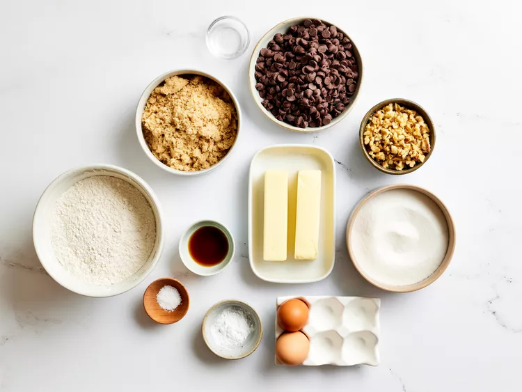
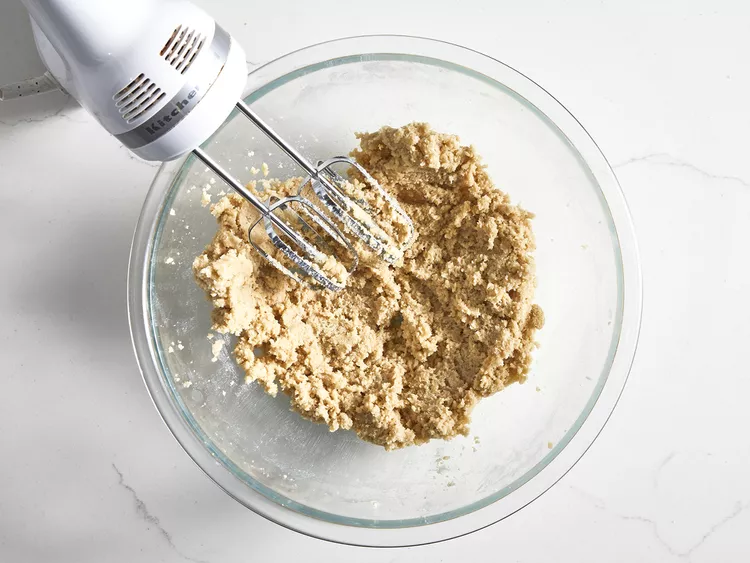
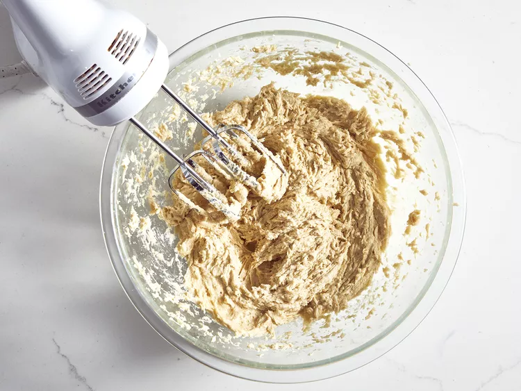
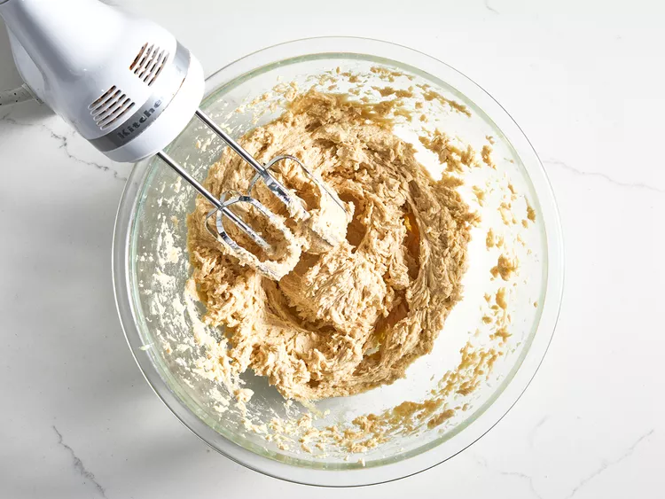
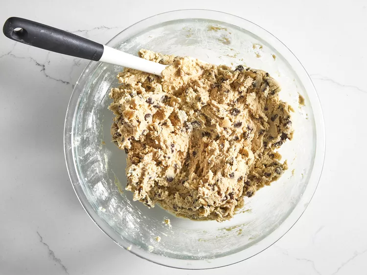
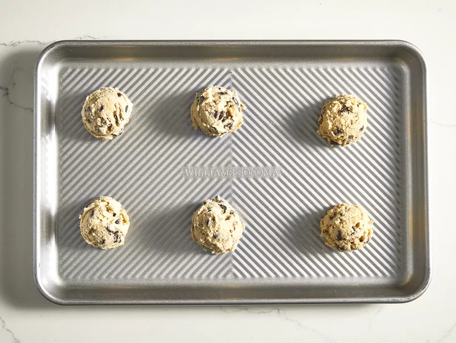
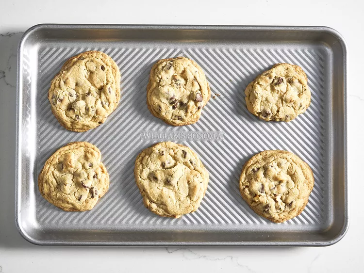
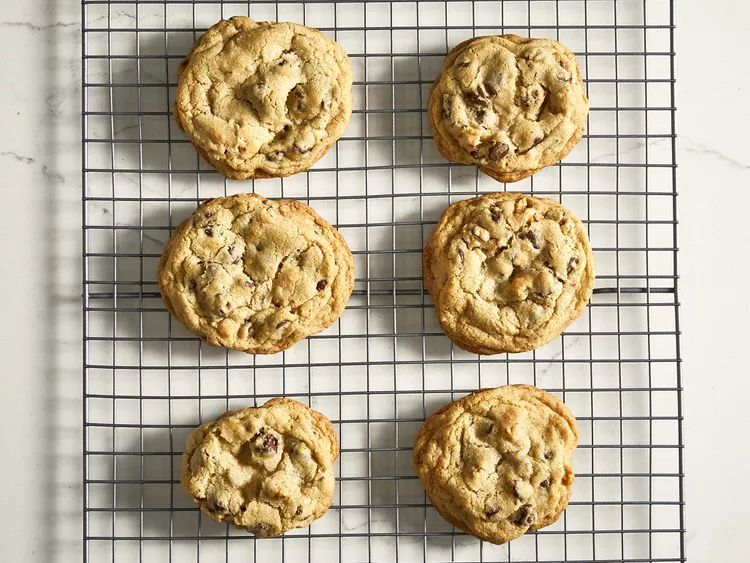

Home
Best Chocolate Chip Cookies

This chocolate chip cookie recipe makes dozens of delicious cookies with crisp edges and chewy middles loaded with chocolate chips!
Chocolate Chip Cookie Ingredients
These are the kitchen staples you'll need to make the best chocolate chip cookies of your life:
- Butter:This classic chocolate chip cookie recipe starts with two sticks of butter creamed with white and brown sugars. The blend of sugars creates a perfectly balanced flavor.
- Eggs:Eggs add moisture and act as a binding agent, which means they help hold the dough together.
- Vanilla:Vanilla extract enhances the overall flavor of the chocolate chip cookies.
- Baking soda: Baking soda acts as a leavener, which means it helps the cookies rise.
- Water: A bit of hot water creates steam as it bakes, working with the baking soda to puff the cookies up.
- Salt:A pinch of salt enhances the flavors of the other ingredients, but it won't make the cookies taste salty.
- Flour:All-purpose flour helps create gluten, which adds structure to the cookie dough.
- Chocolate chips: Of course, you'll need semisweet chocolate chips! You can use dark or milk chocolate chips if you prefer.
- Nuts (optional):Walnuts are optional, but they add nutty flavor and a welcome crunch.
Measurements
- 1 cup butter, softened
- 1 cup white sugar
- 1 cup packed brown sugar
- 2 large eggs
- 2 teaspoons vanilla extract
- 1 teaspoon baking soda
- 2 teaspoons hot water
- ½ teaspoon salt
- 3 cups all-purpose flour
- 2 cups semisweet chocolate chips
- 1 cup chopped walnuts
Directions
- Step 1
Gather your ingredients, making sure your butter is softened, and your eggs are room temperature.

- Step 2
Preheat the oven to 350 degrees F (175 degrees C). Beat butter, white sugar, and brown sugar with an electric mixer in a large bowl until smooth.

- Step 3
Beat in eggs, one at a time, then stir in vanilla.

- Step 4
Dissolve baking soda in hot water. Add to batter along with salt.

- Step 5
Stir in flour, chocolate chips, and walnuts.

- Step 6
Drop spoonfuls of dough 2 inches apart onto ungreased baking sheets.

- Step 7
Bake in the preheated oven until edges are nicely browned, about 10 minutes.

- Step 8
Cool on the baking sheets briefly before removing to a wire rack to cool completely.

- Step 9
Store in an airtight container or serve immediately and enjoy!